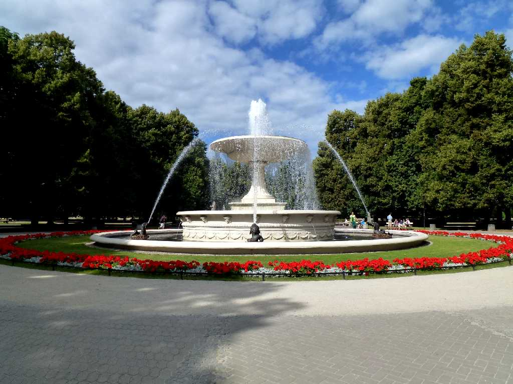
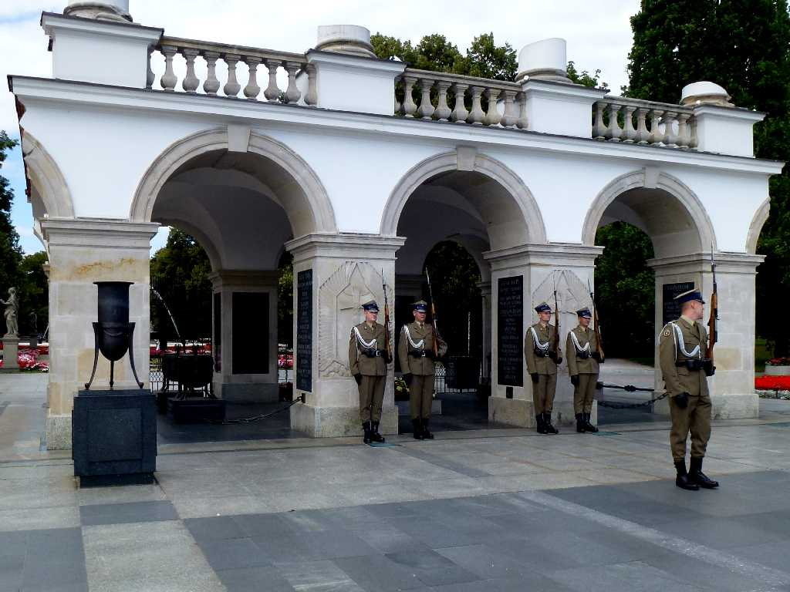
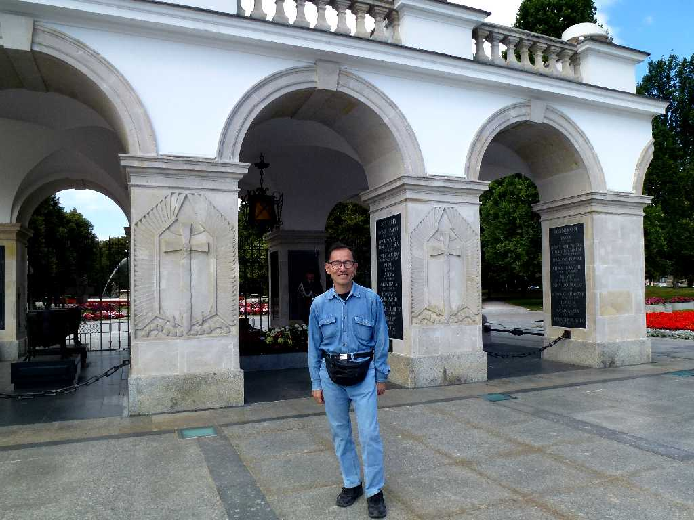
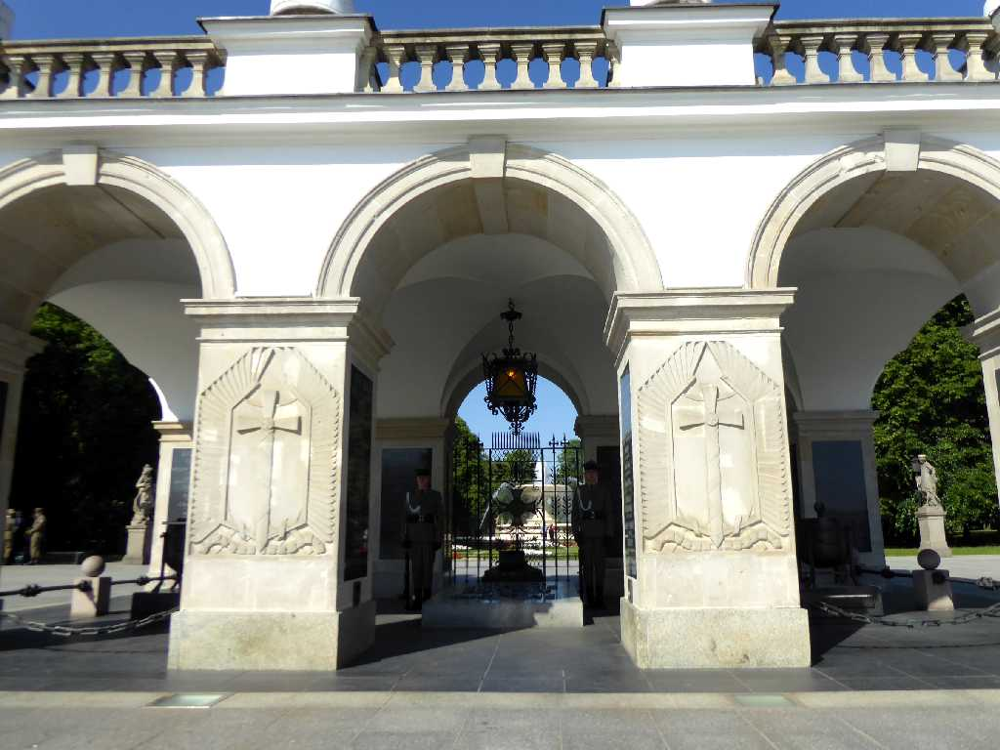
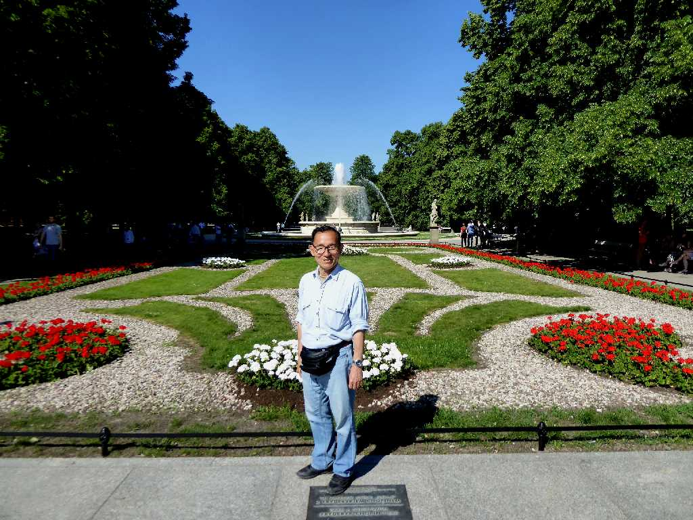

Ogród Saski Warsaw
８０日間世界一周鉄道の旅２９日目サスキ庭園の美しい噴水

Grób Nieznanego Żołnierza Ogród Saski
無名戦士の墓の衛兵交代式

July 22 2013 Grób Nieznanego Żołnierza Ogród Saski

Grób Nieznanego Żołnierza Ogród Saski
ポーランド周遊３,５００㎞バスの旅で６年ぷりのワルシャワ再訪問

June 7 2019 Ogród Saski